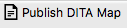
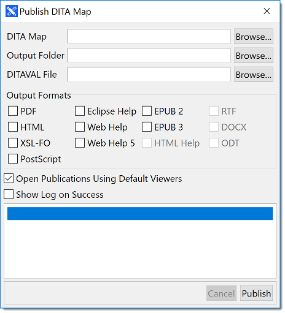

About this task
Steps for publishing a DITA Map in multiple formats.
Procedure
- In File menu select Publish DITA Map
or
click the  button in the toolbar.
The following dialog appears:

- Type the name of the DITA map that you want to publish in the DITA
Map text box or use the Browse... button
to select a DITA map from the file system.
- Type the location of the folder where you want the published files to be stored
in the Output Folder text box or click the
Browse... button to select a folder from the file
system.
- If you want to use conditional processing when publishing, enter the name of the DITAVAL
file in the DITAVAL File text box or click the
Browse... button to select the DITAVAL file from the
file system.
- Select the desired formats by checking the options in the Output
Formats panel.
- Check the Open Publication Using Default Viewers check
box if you want to automatically open the published document right after
generating it.
- Check the Open Log on Success check box if you want to
examine the information generated by the program even if publication is
successful.
- Click the Publish button to start converting the DITA
map to all selected formats.
Results
All requested publications are saved in subfolders of the folder indicated
Output Folder text box. The names of the subfolders reflect
the publication format,